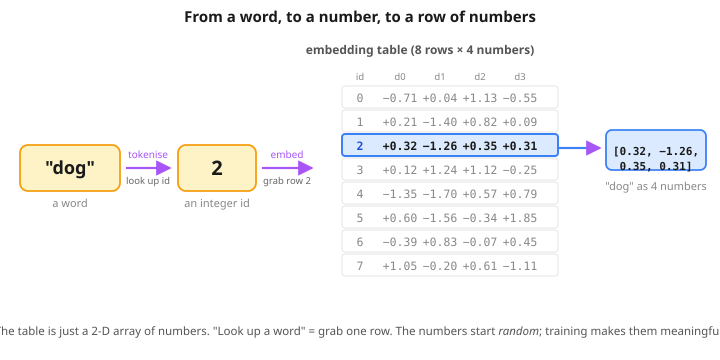

Lesson 2 — Tokens & embeddings
How a computer turns the word "dog" into a list of numbers it can do math on.
Steps in this lesson (matches the notebook)
- The big idea — describe people as numbers
- Dot product = similarity
- 🎮 Interactive: dot product is similarity
- Step 1 — Tokenise (word → integer)
- Why isn't the ID enough?
- Step 2 — Embed (integer → vector)
- The mind-blowing twist: the slots emerge
- 🎬 What "training the embeddings" really means
- 🔎 What data did we feed in? Is this BERT?
- 🍱 Now try it BERT-style (CBOW on 20 sentences)
- Why this matters for the Transformer

Idea The big idea (forget words for a moment)
Imagine you describe yourself with 4 numbers, 0 to 10:
- How much do you like ice cream?
- How much do you like soccer?
- How much do you like video games?
- How much do you like cleaning your room?
Say your answers are [10, 7, 9, 1]. Congratulations — you are now a list of 4 numbers. Your best friend might be [9, 8, 10, 2]. Grandma might be [4, 0, 0, 9].
Dot How does a computer tell who's similar to whom?
The computer only sees the number lists. It needs a math formula that turns "are these number lists alike?" into a single answer.
The formula is dumb-simple. Multiply matching slots. Add up the products. That's a dot product.
You · Friend = 10×9 + 7×8 + 9×10 + 1×2 = 238 (big = similar!)
You · Grandma = 10×4 + 7×0 + 9×0 + 1×9 = 49 (small = not similar)When you BOTH score high on a thing, the product is big (strong agreement → boost). When one scores high and the other low, the product is small (disagreement → no boost). Total = "how much do you agree?"
Words Words work the exact same way
Every word in the vocabulary gets a list of numbers. The computer pretends each word is a "person" being described by secret features.
Twist The mind-blowing twist
In real AI, the slots aren't given human-readable names. The computer doesn't know what "is_furry" means. It just sees:
dog → [0.32, -1.26, 0.35, 0.31]Four mystery numbers. The computer invents its own categories during training. Slot 1 might end up meaning "animal-ness". Slot 2 might mean something humans can't put a name on at all. It doesn't matter — what matters is that similar words end up with similar number lists, so the dot product comes out big.
These mystery-number lists are called embeddings. Each word's list is its embedding vector. Size of the list = embedding dimension: 4 in our toy, 1024 in PRAGMA-Large.
Step 1 Tokenise — word → integer
Give each word in the vocabulary an integer ID.
vocab = ["<pad>", "<mask>", "dog", "cat", "fish", "bark", "meow", "swim"]
tok2id = {w: i for i, w in enumerate(vocab)}
ids = [tok2id[w] for w in ["dog", "bark"]] # [2, 5]Why Wait — why isn't the ID enough?
Fair question. We just turned "dog" into the number 2. Why turn that number into more numbers? Why not just feed 2 to the model?
Worse: the order is meaningless. We assigned dog=2, cat=3, fish=4, bark=5 just because we put them in that order in our vocab list. The model has no reason to think dog (id 2) is more like cat (id 3) than swim (id 7). The numbers 2 and 3 being neighbours on the number line is a coincidence, not a meaning.
That's the problem an embedding solves. Instead of a single nameless number, it gives each word a small card with a list of scores on it — and the model is free to put meaning on those scores during training.
Kid #2: pizza ⭐⭐⭐ soccer ⭐⭐ dog-lover ⭐⭐⭐⭐⭐ quiet ⭐
From just "Kid #2" you knew nothing. From the card, you can tell who's similar to whom — find kids with the same stars in the same boxes. That card is the embedding. The card's checkboxes are the embedding's numbers.
One more thing. The card doesn't come with labels saying "pizza" and "soccer". Those columns just exist; the model decides during training what each slot ends up meaning (could be "animal-ness", could be "noisy-ness", could be something humans can't name). What matters is that partners end up with similar cards.
Step 2 Embed — integer → vector
Picture this happening literally. The embedding "table" is a stack of rows — one per word. The word's id is just the row number. To embed a word, you grab its row. That's it.

2 → look up row 2 of the table → out comes [0.32, −1.26, 0.35, 0.31]. No math, just a memory lookup.emb = nn.Embedding(len(vocab), 4) # 8 × 4 table of trainable knobs
vectors = emb(torch.tensor(ids)) # 2 vectors of 4 numbers eachThe embedding table is just a 2-D array of numbers. Looking up a word's vector is literally indexing the table at its ID row. No math, just memory lookup.
That
4 is a choice the person building the model makes. It's called the embedding dimension (or just d). Bigger isn't always better — it's a trade-off:
- Small
d(2, 4, 8…) → not many checkboxes on each card. Fast and tiny, but words can't be very expressive. - Big
d(768, 1024…) → lots of room for each word to be its own thing. More capacity, but slower and uses more memory.
| Model | Vocab | Embedding dim d |
|---|---|---|
| This toy | 8 | 4 |
| BERT-base | ~30,000 | 768 |
| GPT-3 | ~50,000 | 12,288 |
| PRAGMA-L | ~28,000 | 1024 |

Play 🎬 What "training the embeddings" really means
We keep saying "training nudges them" — but training what? Toward what? Embeddings don't shape themselves out of thin air. They only get shaped because we put them inside a game, and the game pushes them.
- Pick a game the model can play with the embeddings.
- Score how well the model is doing (the loss).
- Use gradient descent (L1c) to nudge every number in every embedding a tiny bit in the direction that scores better.
- Repeat 1000 times.
The game for the demo below: "I'll point at a word, you guess its partner." The secret partners are dog↔bark, cat↔meow, fish↔swim. To win, the model has to make each word's vector point toward its partner's (because that's how their dot product comes out big — and big dot product = the model's confident guess).
Over 200 rounds, the cards reshape themselves: dog's checkboxes drift to match bark's, cat's drift to match meow's. The game shapes the cards.
Six words start scattered at random. Press Train and watch their cards reshape themselves.
Press Train and the loop pulls each word toward its partner. Watch the dog·bark similarity climb while dog·meow stays low. Then, once the loss flattens out, the widget switches to inference — and you can ask the trained model questions.
Notice what just happened. In the training phase we shaped the embeddings; in the inference phase we used them to answer questions. The model can ask "which single word is most similar to dog?" and get a sensible answer. That's already useful.
But our model can only relate words one to one. It can't yet handle a whole sentence like "the dog barked at the cat near the tree" — it has no way to ask "which of the OTHER words in this sentence matter most for understanding 'dog' right now?"
That question is exactly what attention answers. Instead of squishing every context word equally (as the CBOW walkthrough above did), attention learns to weight the context words — paying more attention to the ones that matter. Same training game, smarter model. That's where we go next.
Go deeper: what if I train 10× longer? Does dog·bark keep climbing?
I trained the L2 notebook's tiny embedding model at three durations and measured the trained dog · bark dot product. Real numbers:
| steps | dog · bark | training loss |
|---|---|---|
| 40 | +7.52 | 4.29 |
| 400 | +9.44 | 4.16 |
| 4000 | +12.37 | 4.16 |
The loss plateaus around 4.16 (the floor for this tiny vocab) — but dog·bark keeps growing because nothing stops the vectors from getting longer. The direction they point is already correct after ~400 steps; extra training just makes them bigger. That's why real models use tricks like LayerNorm and weight decay to keep magnitudes in check.
Data 🔎 What did we actually FEED into the model?
Pause and look at what just trained those embeddings. The "training data" for the demo above is a tiny hand-built list. That's the entire training set:
train_pairs = [
("dog", "bark"), ("bark", "dog"),
("cat", "meow"), ("meow", "cat"),
("fish", "swim"), ("swim", "fish"),
]Each round of training, the model picks one row and asks: "given this input word, can I score its partner highest?" If yes, score; if no, nudge every embedding number a hair. Repeat thousands of times — the partners drift together.
Is this what BERT does?
Close cousin, not the same. Both train embeddings by playing fill-in-the-blank, but the shape of the training data is different.
Toy (skip-gram / word2vec)
Training data = pairs of words:
("dog", "bark")
("cat", "meow")
("fish", "swim")
... (6 pairs total)Each example: one input word, guess its partner. Hand-built. Tiny.
Real BERT (masked language modelling)
Training data = sentences from the internet with one word hidden:
"the ___ barked loudly" → dog
"she ate an ___ for lunch" → apple
"the cat sat on the ___" → mat
... (billions more)Real text. Hide 15% randomly. The hidden word IS the label — zero human labelling.
Why the bigger setup? Because real sentences give the model context — not just the partner, but the company a word keeps. Words used in similar contexts (dog / puppy / hound) end up with similar embeddings, even though we never paired them by hand. BERT discovers those clusters from raw text.
That's why our toy needed a list of partners but BERT just needs Wikipedia. Lesson 4 builds the small version of BERT — same fill-in-the-blank game, real (tiny) sentences, and now embedding + attention + feed-forward all training together.
BERT-style 🍱 OK now let's actually train BERT-style
The word2vec toy above used pairs. Let's do something closer to real BERT: feed the model 20 sentences, randomly hide one word per training step, and have it guess the hidden word from the rest of the sentence. This is the pre-training step of BERT — but without attention yet, just embeddings.
The 20 sentences (the entire "internet" for our toy)
1. the dog plays 11. bark is loud
2. the cat plays 12. meow is loud
3. the bird plays 13. tweet is loud
4. the fish plays 14. splash is loud
5. the dog runs 15. park is big
6. the cat runs 16. sofa is big
7. the bird runs 17. tree is big
8. the fish runs 18. tank is big
9. the dog says bark 19. the bird says tweet
10. the cat says meow 20. the fish says splashNotice the structure: animals all share "the X plays / runs" sentences. Sounds all share "X is loud". Places all share "X is big". Then each animal has one personal "says SOUND" sentence to give it individual identity.
One round of training, walked through step by step
This is the heart of the lesson — and it's the part that needs care, not speed. Let's follow one single training round from start to finish, with concrete numbers at every step. (We're going to use tiny 2-number embeddings in this walkthrough so we can do the math on paper. The real experiment above used 8 numbers per word, but the steps are identical — just longer rows.)
Our example sentence will be "the dog runs", and we'll hide dog. Buckle up — 8 small steps.
① Tokenize the sentence — words become IDs
Same trick as Step 1. Each word in our vocab has a fixed ID number; we replace the words with their IDs.
"the dog runs" → [0, 7, 4]
↑ ↑ ↑
the=0 dog=7 runs=4Three positions, three IDs. No math yet — just lookup.
② Embed — each ID becomes a small list of numbers
The embedding table has one row per vocab word. We grab the rows for IDs 0, 7, and 4. Pretend the table currently looks like this (numbers are random — they haven't been trained yet):
position 0 the → [0.1, 0.2]
position 1 dog → [1.0, 0.5]
position 2 runs → [0.3, 0.9]The sentence is now a 3 × 2 block of numbers. From here on, everything is math.
③ Mask — hide one position, save the answer
We pick a random position to hide. Say position 1 (dog). The model now sees:
position 0 the → [0.1, 0.2] ← visible
position 1 ? → [ ? , ? ] ← HIDDEN (this is what to guess)
position 2 runs → [0.3, 0.9] ← visible
right answer (saved aside, not shown to the model): dog (id 7)The model now has two jobs: guess which word lived at position 1, and we'll grade it by comparing its guess to the answer we saved aside.
④ Squish the visible cards into ONE summary card
The model has two visible embeddings. To make a single guess, it has to combine them into a single summary. The simple way (CBOW): average them slot by slot.
summary = ( [0.1, 0.2] + [0.3, 0.9] ) / 2
slot 1: (0.1 + 0.3) / 2 = 0.20
slot 2: (0.2 + 0.9) / 2 = 0.55
summary = [0.20, 0.55]That one card [0.20, 0.55] is the model's "what-should-fit-here?" summary.
the. Attention will let the model weight the context words instead. For now, equal averaging.
⑤ Score every word in the vocab
For each of the 19 vocab words, the model takes the word's own embedding and computes its dot product with the summary card. Big dot product = "your card looks like the summary" = a good guess. Let's compute it for 4 candidate words:
| word | its embedding | dot product with [0.20, 0.55] | score |
|---|---|---|---|
the | [0.1, 0.2] | 0.1·0.20 + 0.2·0.55 = 0.02 + 0.11 | 0.13 |
runs | [0.3, 0.9] | 0.3·0.20 + 0.9·0.55 = 0.06 + 0.50 | 0.56 ← winner |
dog ✅ | [1.0, 0.5] | 1.0·0.20 + 0.5·0.55 = 0.20 + 0.275 | 0.48 |
cat | [0.8, 0.4] | 0.8·0.20 + 0.4·0.55 = 0.16 + 0.22 | 0.38 |
Look what happened: the model picked runs as its guess (score 0.56), but the right answer was dog (score only 0.48). It guessed wrong. That's normal — at the start, the embeddings are random and the model is bad. The next step is where it learns.
⑥ Measure how wrong it was — the loss
The right answer is dog. We want dog's score to be the highest of all 19 scores. Right now it isn't — runs beat it. So the model's confidence in the right answer is too low, and the loss reflects that.
The formula used here is cross-entropy (same one we work through by hand in L4 Step 4). Don't sweat the formula — the only thing to remember is the rule it follows:
Right now dog (0.48) is below runs (0.56), so the loss is bigger than zero — meaningfully wrong, but not catastrophic.
⑦ Nudge every embedding — gradient descent
This is where the magic earns its name. Gradient descent asks, for every single number in every embedding: "if I bump this one number a tiny bit, does the loss go up or down?" — and then nudges each number a hair in the down-loss direction.
For this training round, the practical effect is:
dog's embedding gets pulled toward the summary card[0.20, 0.55]. Next time we see this same context,dogwill score a bit higher.runs's embedding (the false winner) gets pushed away from this summary card. Next time, it'll score a bit lower.- Even
theand the other innocent bystanders get tiny tugs.
One round, one small nudge to thousands of numbers. The change is invisible after one round. After 3,000 rounds it adds up.
⑧ Pick a new sentence, a new mask — repeat
That's the whole training loop. Each round: pick a random sentence, pick a random position to hide, do steps ① through ⑦, then start over. 3,000 rounds in total for our toy.
By the end, the embeddings have drifted into the patterns we saw in the result table above — sounds clustering with sounds, places with places, animals (mostly) clustering with animals. Pre-training is done.
What the model learned (real numbers from 3,000 training steps)
After training, I asked each word: "who are your nearest neighbours?" (highest cosine similarity). Bold = a neighbour from the same category — that's the kind of clustering we hoped to see emerge.
| Word | Top 3 most similar |
|---|---|
| 🐾 Animals — partial clustering ✓ | |
dog | runs, the, bird |
cat | plays, the, runs |
bird | runs, the, fish |
fish | runs, bird, the |
| 🔊 Sounds — clean clustering ✅ | |
bark | loud, meow, tweet |
meow | loud, bark, tweet |
tweet | loud, splash, meow |
splash | tweet, loud, meow |
| 🏞 Places — clean clustering ✅ | |
park | big, sofa, tree |
sofa | park, tank, big |
tree | sofa, park, big |
tank | sofa, park, big |
🎉 This is the magic. Nobody told the model what an "animal" is. We never wrote category=animal anywhere. The model just played fill-in-the-blank on 20 sentences — and the embeddings reorganised themselves so that sounds sit near sounds, places sit near places, and animals partially cluster too. That's "meaning" emerging from context alone.
Same as before, now BERT-style: train, then ask the model 🍱
Same widget pattern as the word2vec demo above, but now with 19 words and the CBOW objective. Press Train — every word drifts from a random spot toward its final position, the loss drops, and once training settles the widget switches to inference: pick a masked sentence and watch the trained model guess.
Why animals only partially clustered (honest read)
Look at cat → plays, the, runs. Where are the other animals? Crowded out by the action verbs.
Why? In our 20 sentences, animals appear in more varied contexts than sounds or places (each animal has its own personal "says SOUND" line), and each animal is the target in only a few sentences. With this much data, "dog" gets shaped toward the words it co-occurs with (runs, plays, the) as much as toward the other animals. There simply isn't enough signal yet.
- Scale. 20 sentences → fragile signal. Billions of sentences → "dog" appears in thousands of contexts that also feature "cat", "puppy", "animal", "tail", "bark"… the categorical signal becomes overwhelming.
- Attention. Instead of averaging the context words, attention weights them. To guess "dog" in "the ___ runs", the model can lean heavily on "runs" (a strong animal-cue) and ignore "the" (uninformative). That's the next lesson.
So everything you just learned is real: pre-training shapes embeddings by playing fill-in-the-blank. Real BERT does exactly this — same training game, same gradient descent — just on billions of sentences and with attention layers on top so the model can be smarter about which context words matter for each blank. We'll see attention in Lesson 3 and the full tiny-BERT in Lesson 4.
Why Why this matters for the Transformer
This is step 1 of every Transformer, including PRAGMA. Before attention can let words look at each other, words have to BE something. Embedding turns them from strings into vectors that math can operate on.
- Computers can't think about words. They can only think about numbers.
- Step 1 — tokenise: every word gets an ID number.
- Step 2 — embed: every ID becomes a list of numbers (coordinates on a learned map).